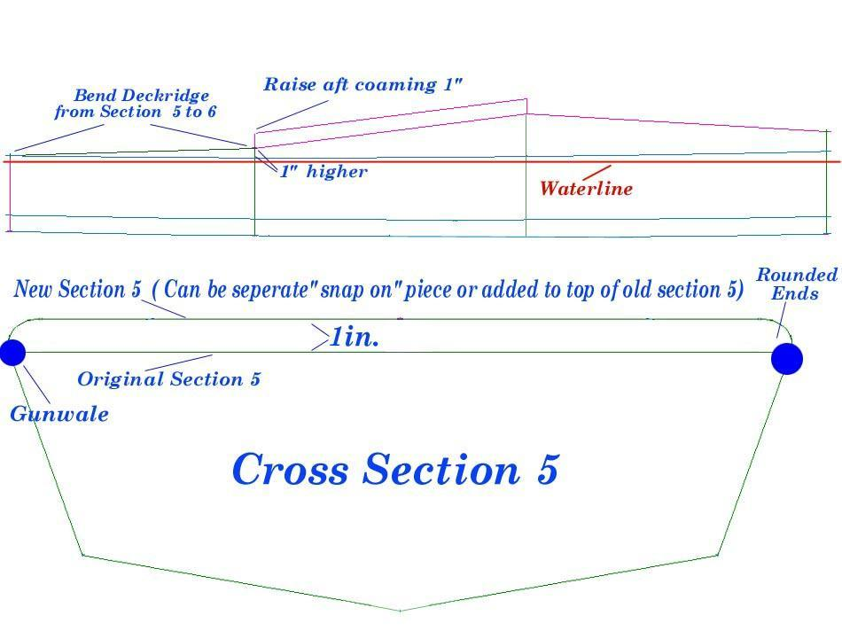

| Frame Modification ( Aft Deck Height) | Menu Previous Page Next Page |
|

New Section 5 Drawing - A new cross section 5 ( Back of Coaming) can be created or the old one modified by adding 1 to 2 inches to the top of the old section. The section is rounded at the ends to allow a smooth transition for the skin. The back of the coaming and the aft deck skin will sit higher resulting in a drier ride.
The deckridge is bent up at section 6 to accomodate the taller section, and layback tubes ( if used) are inclined from section 6 to section 5. The PVC skin may need to be pieced to accept the new deck profile between sections 5 and 6 ( 1.5ft). If the deck skin is loose to begin with, it is possible to use the original deck, as was the case with the Sea Rider used in this example. This modification will restrict the amount of water pooling on this small section of the aft deck,and reduce the possibility of water entry through the deck zipper and the back of the coaming. |
|